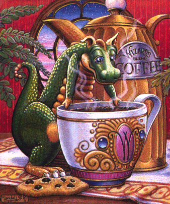
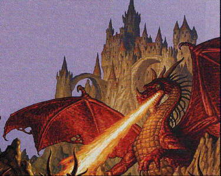
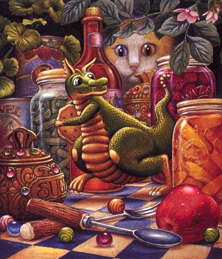
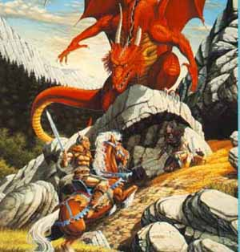
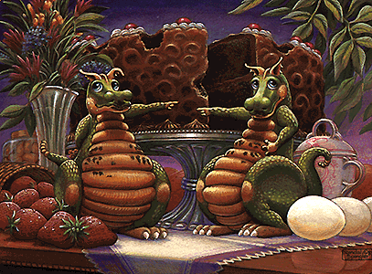

I have been collecting pictures of Dragons for many years. These are some of my favorites along with a bit information about them.

This is one of my all time favorite dragons, I even use it for my Avatar.

Big mean Dragon defending a castle.

Sneaky little Dragon stealing a cookie.But the Cat sees him.
Some links to sites about Dragons.
Back to the pictures.

A brave Knight fighting a large mean Dragon. Who do you think will win?

Two small Dragons pointing their fingers at each other and saying "Not Me"! I think they both got into the cake, don't you.